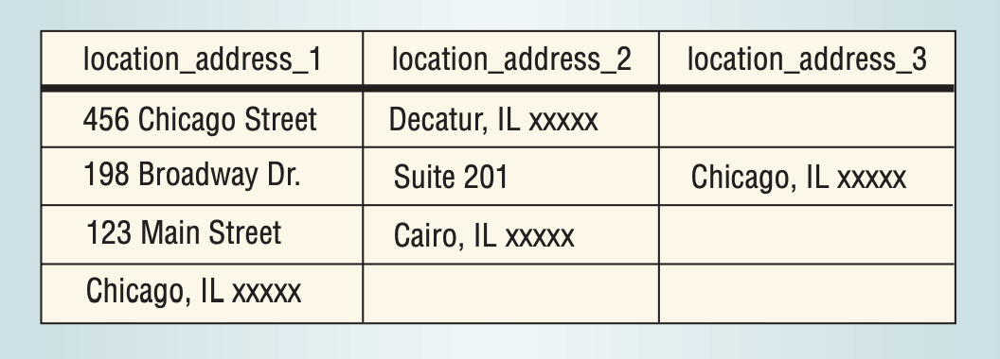

Несколько базовых советов
При создании структур баз данных, важно стремиться к двум основным вещам:
Что касается второго момента: хотим ли мы уменьшить избыточность только из-за проблемы с размером хранилища? Нет, мы делаем это главным образом потому, что наличие избыточных данных приводит к проблемам несогласованности, если во время обновления вы не обновляете все поля, представляющие одну и ту же информацию.
Вот некоторые рекомендации, которые помогут приблизиться к хорошей архитектуре:
Рассмотрим эти рекомендации подробнее.
Архитектуру баз данных можно разделить на следующие категории:
Эти категории представляют классификацию по качеству. Вкратце рассмотрим все категории и разберем, почему нужна хотя бы третья нормальная форма.
Для первой нормальной формы каждое значение каждого столбца каждой таблицы в БД должно быть атомарным. Что значит атомарным? Если вкратце, атомарное значение представляет собой «единичную вещь».
Например, у нас есть такая таблица:
|
first_name |
last_name |
age |
areas |
|
Jhon |
Doe |
27 |
{“Дизайн веб-сайтов”, “Исследование клиентуры”} |
|
Mary |
Jane |
33 |
{“Долговременное стратегическое планирование”, “Найм персонала”} |
|
Tom |
Smith |
35 |
{“Маркетинг”} |
Здесь столбец areas («Области») содержит значения, которые не являются атомарными. Например, в строке Джона Доу поле хранит две сущности: «Дизайн веб-сайтов» и «Исследование клиентуры».
Таким образом, эта таблица не находится в первой нормальной форме.
Чтобы привести ее к такой форме, в каждом поле должно храниться только одно значение.
Во второй нормальной форме ни один столбец, который не является частью первичного ключа (или который может действовать как часть другого первичного ключа), не может быть выведен из меньшей части первичного ключа.
Что это значит?
Допустим, у вас такая архитектура базы (я подчеркнул поля, соответствующие первичному ключу в этой таблице):
|
employee_id |
project_id |
Hours |
employee_name |
project_name |
|
1 |
1 |
10 |
Джон |
“дизайн веб-сайта” |
|
2 |
1 |
20 |
Мэри |
“дизайн веб-сайта” |
В этом проекте имя сотрудника может быть непосредственно выведено из employeee_id, поскольку идея заключается в том, что имя сотрудника однозначно определяется его идентификатором.
Аналогично, имя проекта однозначно определяется идентификатором project_id.
Таким образом, у нас два столбца можно вывести из части первичного ключа.
Каждого из этих примеров было бы достаточно, чтобы выбросить эту таблицу из второй нормальной формы.
Еще один вывод заключается в том, что если таблица была в первой нормальной форме и все первичные ключи являются одиночными столбцами, то таблица уже находится во второй нормальной форме.
Чтобы таблица соответствовала третьей нормальной форме, она должна быть во второй нормальной форме, при этом в ней не должно быть атрибутов (столбцов), кроме первичного, которые транзитивно зависят от первичного ключа.
Что это значит?
Допустим, у вас следующая архитектура (которая далека от идеала):
|
employee_name |
employee_id |
age |
department_number |
department_name |
|
Джон |
1 |
27 |
123 |
“Маркетинг” |
|
Мэри |
2 |
33 |
456 |
“Оперативный” |
|
Том |
3 |
35 |
123 |
“Маркетинг” |
В этой таблице department_number можно вывести из employee_id, а department_name можно вывести из department_number. Таким образом, department_name транзитивно зависит от employee_id!
Если существует такая транзитивная зависимость: employee_id → department_number → department_name, то данная таблица не находится в третьей нормальной форме.
Какие проблемы возникают из-за этого?
Если название отдела можно вывести из его номера, то хранение этого поля для каждого сотрудника вводит лишнюю избыточность.
Представьте, что отдел маркетинга меняет название на «Маркетинг и продажи». Чтобы сохранить согласованность, придется обновить ячейку в каждой строке таблицы для каждого сотрудника этого отдела! В третьей нормальной форме такого бы не произошло.
Кроме того, вот, что произойдет, если Мэри решит покинуть компанию: мы должны удалить ее строку из таблицы, но если она была единственным сотрудником оперативного отдела, то отдел тоже придется удалить.
Всех этих проблем можно полностью избежать в третьей нормальной форме.
2. Создайте последнюю линию обороны в виде ограничений
База данных, с которой вы работаете, — это больше, чем просто группа таблиц. В нее встроена определенная функциональность. Многие из этих функций помогают обеспечить качество и корректность данных.
Ограничения устанавливают правила, какие значения можно вносить в поля БД.
Когда определяете отношения в базе данных, обязательно установите ограничения внешних ключей.
Обязательно укажите, что должно произойти при удалении и обновлении строки, связанной с другими строками в других таблицах (правила ON DELETE и ON UPDATE).
Обязательно используйте NOT NULL для всех полей, которые никогда не должны обнуляться. Возможно, есть смысл установить проверку на бэкенде, но помните, что сбои случаются всегда, поэтому не помешает добавить и такое ограничение.
Установите проверочные ограничения CHECK, чтобы убедиться — значения таблицы находятся в допустимом диапазоне, например, цена на товар всегда имеет положительное значение.
Интересный факт: в апреле 2020 года именно такое ограничение в программном обеспечении помешало торгам на московской бирже ММВБ, потому что цена на нефтяные фьючерсы WTI опустилась ниже нуля. В отличие от московской биржи, Нью-Йоркская товарная биржа NYMEX обновила софт за неделю до инцидента, поэтому сумела успешно провести сделки по отрицательной цене, то есть с доплатой покупателю от продавца — прим. пер.
Обо всех ограничениях PostgreSQL можно почитать здесь.
Если в вашем приложении или на веб-сайте есть форма с одним полем, где пользователь вводит свой адрес, то это уже плохо пахнет. Очень вероятно, что в этом случае у вас будет также одно поле в базе данных для хранения адреса в виде простой строки.
Но что делать, если нужно объединить покупки клиентов по городам, чтобы посмотреть, в каком городе какой продукт более популярен? Вы сможете это сделать?
Это будет очень тяжело!
Поскольку полный адрес хранится как строка в поле БД, в первую очередь придется разбираться, какая часть этой строки является городом! И это почти невыполнимая задача, учитывая все возможные форматы адресов в этом поле.
Поэтому обязательно разбивайте универсальное поле «Адрес» на конкретные поля: улица, номер дома, город, область, почтовый индекс и так далее.
Вот иллюстрация из книги Майклза Блаха «Медная пуля для улучшения качества программного обеспечения»:

Какие тут видны возможные проблемы? Сможете ли вы легко отличить город Чикаго от улицы Чикаго? Наверное, нет.
Поэтому не забывайте всегда давать четкие имена столбцов каждой единице информации.
4. Никогда не храните в одном поле имя и фамилию
Аналогично ситуации с адресами: количество вариаций имени и фамилии слишком велико, чтобы их четко различать.
Конечно, можно отделить имя от фамилии, если между ними пробел.
Например, «Майк Альче» → имя «Майк» и фамилия «Альче».
Но что делать, если пользователь ввел второе имя? Или у него двойная фамилия? А что, если есть и второе имя, и двойная фамилия?
Как определить, где имя, а где фамилия, чтобы разделить строку? Ошибки неизбежны.
Способ избежать многих проблем — создать отдельные поля (в формах) для имен пользователей first_name и last_name. Таким образом, вы позволите пользователям разделить свои собственные имена и сможете хранить данные согласованным образом.
Примечание: я не говорю, что в полях БД запрещены пробелы. Например, для таких имен, как «Хуан Мартин Дель Потро», первая часть «Хуан Мартин» входит в поле first_name, а «Дель Потро» — в поле last_name. Конечно, это не идеально. Можно дополнительно завести столбцы middle_name и second_last_name. Посмотрите подробнее о возможных вариациях имен и фамилий в списке «Заблуждения программистов об именах» и статье «Заблуждения программистов об именах — с примерами». Придется согласиться на какой-то компромисс между точностью и практичностью.
Довольно неприятно работать с данными, которые выглядят как user.firstName, user.lst_name, user.birthDate и так далее.
Я бы посоветовал установить правила именования с подчеркиванием, потому что не все SQL-движки одинаково обрабатывают заглавные буквы, а заключать всё в кавычки весьма утомительно.
Выберите так же, как называть таблицы — во множественном или единственном числе (например, users во множественном числе или user в единственном). Мне больше нравится единственное число, но все фреймворки для бэкенда, кажется, по умолчанию настроены на множественное. Приходится следовать шаблону и использовать множественное число.